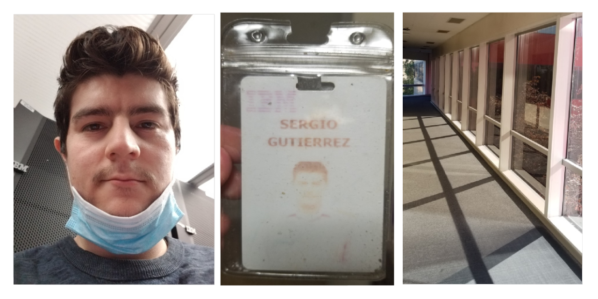
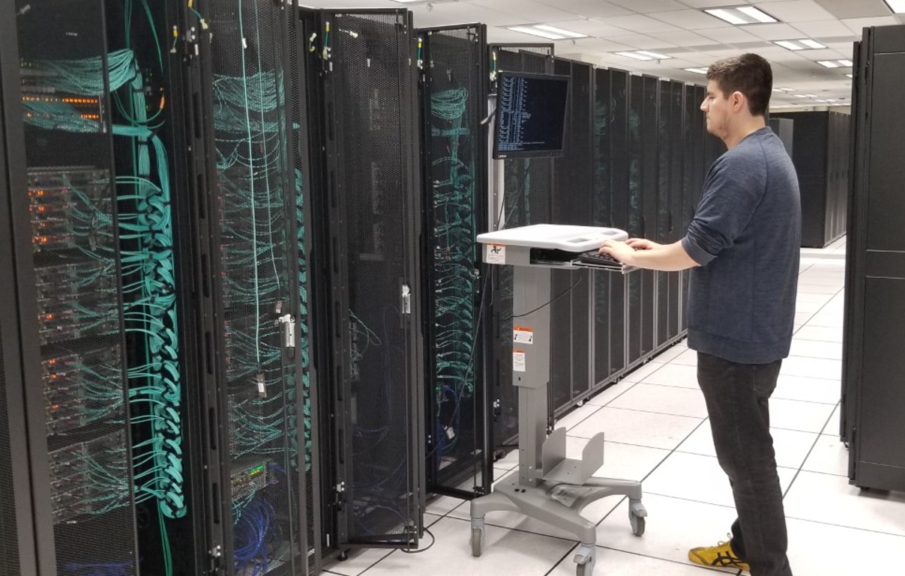
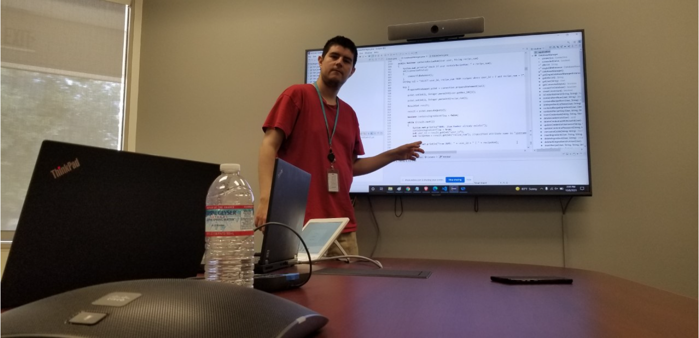
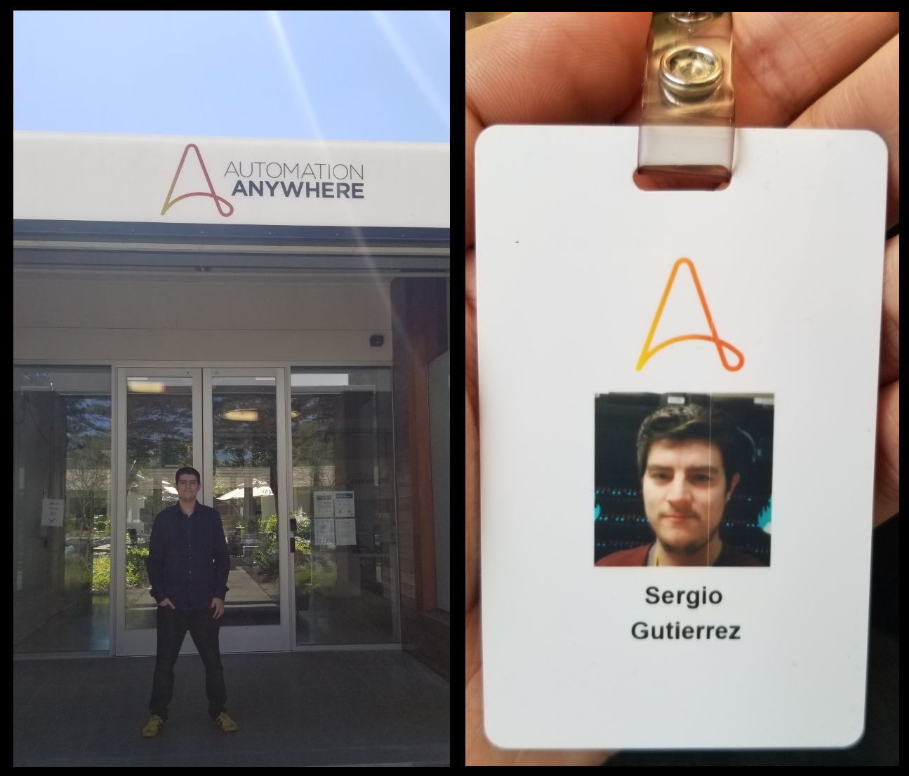

Background and Formation
In 2014, I enrolled at De Anza College, located in Cupertino, California. This is where I began my career in Computer Science. From 2014 to 2019, I took nearly all the programming classes offered by the school. This included 3 courses in C++, 2 courses in Java, 1 in javascript, 1 in HTML/CSS, 1 in Assembly, and 2 in Linux/Unix. At De Anza, I obtained a liberal Arts-Science, Math and Engineering Associate's degree. I wasn't actually pursuing this, I simply obtained it by completing the courses I needed to transfer to San Jose State University.
In 2019, I transferred to San Jose State University to finish my Computer Science degree. The Upper division courses gave me experience working in Agile environments developing software. At SJSU, I took 1 course in PHP, 1 in javascript, 5 in Java (including android development), 2 in C++, 1 in C, 1 in C# (which included a project in Unity), and one course that included Haskell, Prolog and Scheme. I also took courses in relational databases, where I learned MySQL and SQLite. I graduated in August 2021.
On September of 2017, I joined IBM taking the role of Data Center Specialist. A large part of what I did at IBM, was focused on configuring the BIOS, updating the firmware, installing O.S., and making sure all of our Linux and Windows servers were physically installed and cabled. I also worked setting up PXE networks, and solving tickets through the use of the Linux command line. I also developed Bash scripts to perform tasks to solve issues. Other tasks of what I did at IBM, involved in maintaining and improving IBM web applications for our Data Center. This involved the use of Java, Javascript, and MySQL.

At IBM, my tasks varied a LOT. Going from manual hardware maintenance of Linux servers, to automating scripts in Bash. My managers were Josh Barnard and Rick Camilosa. It was great to work with them. I left IBM on December 31st 2021, because my contract was going to end that day.


At the end of August of 2021 (slightly before leaving IBM), I obtained the role of Web Application Developer in the Maine Long Term Care Ombusman Program. They are based in Augusta, Maine, U.S., but I work remotely for them. I still hold this position, and it is a part time job. I perform the duties of this job mostly on evenings of weekdays and Saturdays. I love working for this company. Some of the tasks include:
- Maintain and improve an existing web application built using a frontend with HTML, CSS and Javascript, as well as a backend based on Java and MySQL.
- Debugging tasks.
- Periodically, create SQL queries that export MS excel spreadsheets based on specific data found in the database.
- Linux/Unix shell skills to administer the web application that runs on a Tomcat server.
- Technologies used: Visual Studio Code, Netbeans, WinSCP, etc.
In Summer 2022, I was able to land two incredible internships. One was at Automation Anywhere, as a Software Engineer. The second was at CDK Global, as a Software Developer. When the time came for me to decide which one to take, my manager at Automation Anywhere informed me that my internship was going to be asynchronous. In other words, I would have 24 hours to complete daily tasks. Since our team would not be based solely in San Jose, but based all over the world (including India for instance), that led me to believe that I could take on both internships, full time, at once. Their start and end dates were also slightly different. After inquiring and speaking to managers, I settled for doing both. I was very confident on my ability to multitask, and I absolutely did incredibly well in both! Even more than I expected.
In June, July, and August 2022, I worked for CDK Global as a Software Developer. I had 3 projects. The first involved working with a tool called "Rest-Assured", where I would automate tests for REST Apis. Here I would use the TestNG framework for end-to-end tests. The second project involved UI automation tests for CDK's internal web applications, and I used Cypress coupled with cucumber to have behavior driven development in my tests. The 3rd project involved working in a team of 6 to create a react native app for young girls. I worked with Samarth Goudar, Abhitej Arora, Sameer Joshi, Sathwik Nadella, and Saurabh Vijaywargia. Here's 5 pictures a few pictures I took at CDK Global:


Since the 3rd project I developed at CDK, is not an internal application to CDK's operations, I can show my work. Here is the github where a portion of the work was done: https://github.com/10samarth/STEMApp
In Summer of 2022, I became a Software Engineer Intern for Automation Anywhere:

I had two main tasks at this company. The first one, concerned testing installation software. Other developers would create installers for Windows and Mac, and through VM servers I would test them creating multiple scenarios. To accelerate my tests, I developed RPA bots using Automation Anywhere's control room 360 software. The second task concerned debugging installation software. Whether it be through analysis of Linux or powershell scripts, or the Java source code, I would have to assert that the software would work correctly in both Windows and Mac. Some of these tests were automated, but most of them were manual. My managers were Joe Antonelli and Krishna Kanth.
To end my background, the following slideshow features certificates of courses I completed in fall of 2021, from Udemy, sponsored by IBM (they encouraged me to get those certifications). Here they are:
Thank you for spending time reading my background info!! If you are a recruiter or manager, and I applied to your company, I hope my background comes close to what you are looking for!